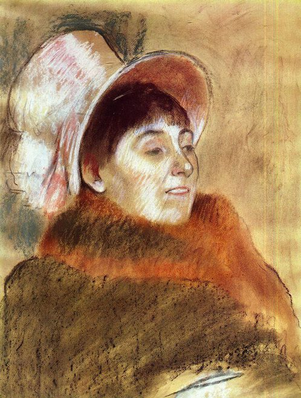

Edgar Degas,1834 - 1917,Impressionism,French,"Edgar Degas (US: or UK: ; born Hilaire-Germain-Edgar De Gas, French: [ilɛːʁ ʒɛʁmɛ̃ ɛdɡaʁ də ɡɑ]; 19 July 1834 – 27 September 1917) was a French artist famous for his paintings, sculptures, prints, and drawings. He is especially identified with the subject of dance; more than half of his works depict dancers. Regarded as one of the founders of Impressionism, he rejected the term, preferring to be called a realist. He was a superb draftsman, and particularly masterly in depicting movement, as can be seen in his rendition of dancers, racecourse subjects and female nudes. His portraits are notable for their psychological complexity and for their portrayal of human isolation.At the beginning of his career, Degas wanted to be a history painter, a calling for which he was well prepared by his rigorous academic training and close study of classical art. In his early thirties, he changed course, and by bringing the traditional methods of a history painter to bear on contemporary subject matter, he became a classical painter of modern life.",http://en.wikipedia.org/wiki/Edgar_Degas,702
